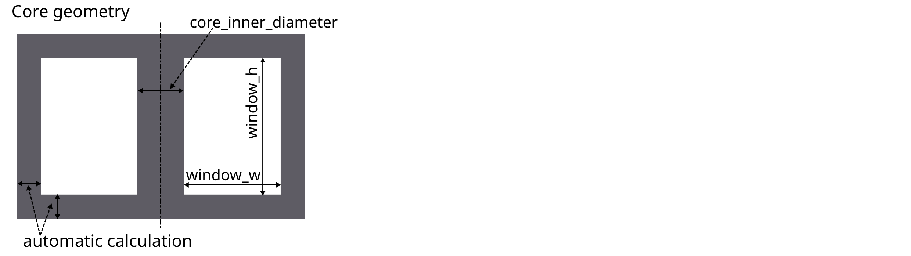

1 FEM Magnetics Toolbox (FEMMT)
Python toolbox to generate preconfigured figures for FEM simulation tools in power electronics.
The toolbox is accessible via python code or a graphical user interface (GUI), which current development status is experimental.
1.1 Overview features
1.1.1 Stable features
- Component features:
2D axi-symmetric cylindrical simplification
Arbitrary (distributed) air gap positioning in center leg
Variety of winding interleaving schemes
- Special geometries:
Magnetic shunt (transformer with integrated inductor)
Stacked core (transformer with integrated inductor)
Round litz wire
Round and rectangular solid wires
Different winding schemes (hexagonal, left/right, top/down, …)
Parallel connection of solid wires
Insulation distances (winding2core, winding2winding)
Many examples. to learn and understand FEMMT
- Databases
Litz wire database
Core geometry database
Conductor materials: temperature curves
Ferrit materials: permeability / permittivity material database (datasheets and own measurements)
- Solver features:
Implemented using ONELAB
Current excitation
Frequency domain solver
Litz wire loss model for proximity and skin effect (Niyomsatian et al.: Frequency-domain homogenization for impedance characterization of litz-wire transformers in 2-D finite element models)
- Core loss calculation for real materials (data from material database)
Amplitude dependent loss angle (Local resolution of complex permeability)
Equivalent permittivity data for eddy current calculations
Effect of dimensional resonance is considered
- Thermal solver
Thermal conduction (Poisson equation)
Fixed temperature and isolation boundary conditions
Verified model for potted core
- Pre/Post processing:
Linear eddy current analysis via input current based FFT
Pre-visualization of ferrite material (measurement) data interpolation
Field visualization in gmsh GUI (magnetic flux density, eddy current losses, …)
Inductance matrix for n-winding transformer
Transformer equivalent diagrams for 2- and 3-winding transformer
- Optimization:
Parallel computing to speed up simulations (no cpu core limitation)
Examples for Pareto optimization to adapt to your own optimization problem
1.1.2 Experimental features (under development)
- Component features:
Reluctance module is currently working for a single optimization example and not fully implemented yet.
- Solver features:
Time domain solver
- Optimization:
Advanced optimization algorithms by connecting to optuna
- GUI:
Experimental in general
1.1.3 Planned features (Roadmap for 202x)
- Solver features:
Core loss calculation from non-sinusoidal flux
Local temperature dependency (currently only lumped temperature assignment, e.g. general temperature for all windings)
1.1.4 Not supported features
- Not supported component features:
Toroidal core
- Not supported solver features:
Voltage excitation
1.2 Documentation
Please have a look at the documentation. You will find tutorials and a function description.
1.3 Installation
To run FEMMT python (version 3.10 or above) and onelab is needed.
1.3.1 ONELAB installation
Go to https://onelab.info/
Download the Desktop Version for your OS (Windows, Linux or macOS)
Unpack the software and remember the file path. This will be needed later when installing FEMMT.
1.3.2 Install FEMMT
FEMMT can be installed using the python pip package manager. This is the stable release version (recommended).
pip install femmt
For working with the latest version, refer to the documentation.
1.4 Minimal example
This toolbox is able to build a complete FEM simulation from simple
Python code. The following figure shows the Python code on the left and
the corresponding FEM simulation on the right. 
To run a minimal example please have a look at the examples.
1.5 GUI (Experimental)
There is a first preview for a GUI. Installing this is a bit cumbersome at first, but will be simplified in the future:
Download the complete repository via
Code->Download ZIPand unpack it.Or clone the repository
Install the development version of femmt using
pip install -e .Run python
.../path-to_femmt../../femmt/gui/femmt_gui.py
Please note, the GUI is experimental.

1.6 Bug Reports
Please use the issues report button within github to report bugs.
1.7 Contributing
Pull requests are welcome. For major changes, please open an issue first to discuss what you would like to change. For contributing, please refer to this section.
1.8 Changelog
Find the changelog here.
1.9 License
1.10 History and project status
This project was initially written in matlab using FEMM simulation tool. It became clear that the project was no longer a small project. The project should be completely rewritten, because many new complex levels have been added. To place the project in the open source world, the programming language python is used.
1.11 FEMMT development version (for developers only)
Note
If you want to make changes to the code of FEMMT (e.g. to fix a bug), you should read this section carefully.
If you simply want to use this toolbox as a user (simulating magnetic components), skip this section.
This is the latest development version with the latest features. Note: You may need to install git. Also have a look at the developers notes.
FEMMT is using the material database. To use the latest version for developing, also install the material database in developer mode. It is important to first install the material database, second install FEMMT. Note the dot . in the following instructions.
cd /Documents/Folder/of/Interest/materialdatabase
git clone git@github.com:upb-lea/materialdatabase.git
cd materialdatabase
pip install -e .
After the material database has been installed, install FEMMT:
cd /Documents/Folder/of/Interest/
git clone git@github.com:upb-lea/FEM_Magnetics_Toolbox.git
cd FEM_Magnetics_Toolbox/
pip install -e .
1.11.1 Basics
The magnetic component can be an inductor, a transformer, or a transformer with integrated stray path. The parameterization process is divided into the following steps:
Choose the simulation type, whether it’s frequency domain or time domain simulation,
set core parameters (geometry, material),
set air gap parameters (position, height),
set insulation distances
set conductor parameters (litz/solid wire),
start the frequency domain simulation by specifying the given frequencies, currents, and phases, and start the time domain simulation by specifying the given currents, and time parameters.
Please have a look at the basic_inductor example for frequency domain simulation, and at the basic_inductor_time_domain example for time domain simulation.
The examples contain among other things:
Geometries: Coil, transformer, transformer with integrated stray path,
wire and stranded wire definition,
air gaps definition,
excitation with different frequencies, amplitudes and phases for frequency domain simulation, and with amplitudes and time steps for time domain simulation.
The simulation results can be found in working_directory/results/result_log_electro_magnetic.json. Working directory can either be set by the user otherwise it located at /python-side-packages-path/femmt. In it you can find
power loss in the core: hysteresis losses and eddy current losses,
losses per winding and for each individual winding,
self- and mutual inductances.
For a more detailed guide on how to create a model, please have a look here.
1.11.2 Counting arrow system
Defined as depicted here:

1.12 GUI (Experimental)
There is a first preview for a GUI. Installing this is a bit cumbersome at first, but will be simplified in the future:
Download the complete repository via
Code->Download ZIPand unpack it.install the development version of femmt as described above
run python
downloads/path-to_femmt/femmt/gui/femmt_gui.py
Please note, the GUI is experimental.
2 User Guide: How to create a FEMMT model
This guide explains how a model can be created in femmt and provides all the necessary information to work with femmt. Many examples for femmt models can be found in the example folder.
2.1 Working directory
Every femmt model has a working directory which can be set when creating
an instance of the femmt base class called MagneticComponent. When
running the simulation many files will be created in the working
directory including the model, mesh and multiple result files. It also
contains the electro_magnetic_log.json which the most important
simulation results (e.g. losses, inductance, …).
Besides the working directory a MagneticComponent also needs a
ComponentType. Currently this can be ‘Inductor’, ‘Transformer’ or
‘IntegratedTransformer’.
This results to the following code:
import femmt as fmt
geo = fmt.MagneticComponent(simulation_type=fmt.SimulationType.FreqDomain,
component_type=fmt.ComponentType.Transformer, working_directory=working_directory,
verbosity=fmt.Verbosity.ToConsole, is_gui=is_test)
The simulation_type specifies the type of simulation to be performed.
If set to
FreqDomain, indicating a frequency domain simulation.If set to
TimeDomain, indicating a time domain simulations.
The Verbosity controls the level of detail in the output.
If set to
ToConsole, all output messages are shown in the commend line .If set to
ToFile, all output messages are written to files.If set to
Silent, no command line outputs are shown.
This simple feature significantly speeds up simulation time, especially for many automated simulations.
2.2 Creating a core
In general, only 2D rotationally symmetric geometries are represented in FEMMT. Other core shapes must first be converted to a 2D rotationally symmetric shape. The corresponding values for this (diameter core, dimensions of the winding window) are taken from the data sheet. Afterwards, a corresponding geometry is generated automatically.
The following graphics always show only a sectional view of the core geometry.
After creating a MagneticComponent, a core needs to be created. The core needs spatial parameters as well as material parameters. The neccessary spatial parameters are shown in the image below.
Core spatial parameters can be entered manually but FEMMT provides a database of different practical cores. This database can be accessed using:
core_db = fmt.core_database()["PQ 40/40"]
Now the core object can be created and added to the model (geo object)
core_dimensions = fmt.dtos.SingleCoreDimensions(core_inner_diameter=core_db["core_inner_diameter"],
window_w=core_db["window_w"],
window_h=core_db["window_h"],
core_h=core_db["core_h"])
core = fmt.Core(core_type=fmt.CoreType.Single,
core_dimensions=core_dimensions,
detailed_core_model=False,
material=mdb.Material.N49, temperature=45, frequency=inductor_frequency,
permeability_datasource=fmt.MaterialDataSource.Measurement,
permeability_datatype=fmt.MeasurementDataType.ComplexPermeability,
permeability_measurement_setup=mdb.MeasurementSetup.LEA_LK,
permittivity_datasource=fmt.MaterialDataSource.Measurement,
permittivity_datatype=fmt.MeasurementDataType.ComplexPermittivity,
permittivity_measurement_setup=mdb.MeasurementSetup.LEA_LK, mdb_verbosity=fmt.Verbosity.Silent)
geo.set_core(core)
2.2.1 Material database
The material database was already introduced in the upper code example with the material= parameter. The temperature as well as the frequency are necessary to pick the corresponding data from the datasheet.
2.3 Adding air gaps to the core
In the next steps air gaps can be added. Currently it is only possible to add air gaps in the center leg, there for the ‘AirGapLegPosition’ is always ‘CenterLeg’. To set the vertical position for a air gap multiple methods are available:
Center: The air gap will always be positioned in the center
Percent: A value between 0 and 100 can be given. Where 0 represents the bottom end and 100 the top end of the winding window.
Manually: The specific y-coordinate needs to be entered manually.
Have a look at the following example on how to create an air gap object and add it to the model:
air_gaps = fmt.AirGaps(method=fmt.AirGapMethod.Percent, core=core)
air_gaps.add_air_gap(leg_position=fmt.AirGapLegPosition.CenterLeg, height=0.0005, position_value=50)
geo.set_air_gaps(air_gaps)
Adding an air_gap object is not necessary. If no air gap is needed, don’t add the air gap object to the model.
2.4 Set insulation distances
There are multiple insulations implemented in femmt. Some of them are created as rectangles in the model, some are just adding an offset to the windings.
Core insulations are the insulations which are created as rectangles in
the model. 4 core insulations will be added: top, bottom, left, right.
The distance of those values can be set with the add_core_insulations
function. The order of add_core_insulations is as follow : top, bottom, left, and right.
Furthermore there are offset insulations between each turn in the same
winding, a distance between 2 windings in one virtual winding window and
a distance between each virtual winding window. The first two are set
using the add_winding_insulations functions, the last one when
creating such a Virtual Winding Windows (vww) .
The add_winding_insulations contains the inner winding insulation, which is a nested lists representing
the insulations between turns of the same winding. Importantly, these values are not arranged according to the
sequence in which conductors are added to each winding. Instead, the organization is based on the winding number
with conductors sorted in ascending order of these numbers. Thus, the first sublist (index 0) corresponds to
the winding with the lowest number, the second sublist (index 1) to the winding with the next lowest number, and so on.

This is how to create an insulation object and add certain insulations:
insulation = fmt.Insulation(flag_insulation=True)
insulation.add_core_insulations(0.001, 0.001, 0.002, 0.001)
insulation.add_winding_insulations([[0.0002, 0.001],[0.001, 0.0002]])
geo.set_insulation(insulation)
The spatial parameters for the insulation, as well as for every other function in FEMMT, are always in SI-Units, in this case metres.
2.5 Add windings to the winding window
In order to understand the way winding windows work in femmt, the concept of virtual winding windows must be explained:
2.5.1 Virtual Winding Windows
For every femmt model there is always one winding window, which is a 2D
representation of the 3D rotated winding window. This winding window can
be split into multiple virtual winding windows which are used to draw
the conductors. The split_window function has multiple ways to split a winding window into:
NoSplit: Only 1 virtual winding window will be returned and it has the same size as the real winding window.
HorizontalSplit: 2 virtual winding windows will be returned, one for the top and one for the bottom part. The height of the splitting line can be set using a horizontal_split_factor (value between 0 and 1)
VerticalSplit: 2 virtual winding windows will be returned, one for the left and one for the right part. The radius (x-coordinate) of the splitting line can be set using a vertical_split_factor (value between 0 and 1)
HorizontalAndVerticalSplit: 4 virtual winding windows are returned. One for each corner (in the following order): top_left, top_right, bottom_left, bottom_right. In this case the horizontal and vertical split factors can be used to set the sizes of each grid cell.

In addition to that 2 virtual winding windows can be combined to one (this is not possible for (top_left, bottom_right) or (top_right, bottom_left) combinations). This is done using the combine_vww() function of the WindingWindow class.
Each virtual winding window can be filled with either one single winding or one interleaved winding.
A winding window with only one virtual winding window can be craeted like this:
winding_window = fmt.WindingWindow(core, insulation)
vww = winding_window.split_window(fmt.WindingWindowSplit.NoSplit)
Additionally, the NCellsSplit function provides even more flexibility, allowing
the winding window to be split into N columns horizontally. The distance
between the virtual winding windows, horizontal split factors, and the
vertical split factor can be specified. A winding window with 12 columns horizontally can be created like this:
winding_window = fmt.WindingWindow(core, insulation)
cells = winding_window.NCellsSplit(0, [1 / 6, 2 / 6, 3 / 6, 4 / 6, 5 / 6], 0.5)
Furthermore, the NHorizontalAndVerticalSplit function introduces more advanced splitting capabilities
by allowing the winding window to be split into N columns horizontally,with each having M_N rows (vertically).
Users can specify the positions of borders between columns and rows
to customize the layout of the resulting virtual winding windows. Creating a winding window with three columns,
where the second column is further divided into three rows, can be achieved with the following code:
winding_window = fmt.WindingWindow(core, insulation)
cells = winding_window.NHorizontalAndVerticalSplit(horizontal_split_factors=[0.48, 0.75],
vertical_split_factors=[None, [0.5, 0.85], None])
2.5.2 Winding types and winding schemes
The following table gives an overview of the different winding types, winding schemes and conductor arrangements:
WindingType |
ConductorType |
WindingScheme |
ConductorArrangement |
WrapParaType |
status |
description |
|---|---|---|---|---|---|---|
Interleaved |
Always needs 2 conductors |
|||||
RoundSolid, RoundLitz |
||||||
Bifilar |
not implemented |
TODO |
||||
VerticalAlternating |
not implemented |
primary and secondary winding are interleaved vertically (rows) |
||||
HorizontalAlternating |
implemented |
primary and secondary winding are interleaved horizontally (cols) |
||||
VerticalStacked |
implemented |
primary winding is drawn bottom to top, seoncdary winmding is drawn top to bottom |
||||
Square |
“ |
|||||
Hexagonal |
“ |
|||||
RectangularSolid |
not implemented |
|||||
Single |
Always needs 1 conductor |
|||||
RoundSolid, RoundLitz |
||||||
None |
implemented |
|||||
Square |
“ |
|||||
Square full width |
“ |
|||||
Hexagonal |
“ |
|||||
RectangularSolid |
||||||
Full |
implemented |
whole virtual winding window contains is filled with one turn |
||||
FoilHorizontal (stacked) |
implemented |
foils are very long (x-axis) and drawn along y-axis |
||||
Square full width |
not implemented |
foils are drawn along x-axis first and then along y-axis |
||||
FoilVertical |
implemented |
foils are very tall (y-axis) and drawn along x-axis |
||||
Fixed Thickness |
“ |
|||||
Interpolate |
“ |
2.5.2.1 ConductorArrangement
Square: conductors are set in next to each other in a grid
Hexagonal: similar to square but in this case the conductors frpmo the next column slips in the free space between two conductors from the first column
Square full width: conducors are first drawn along x-axis and then y-axis
2.5.2.2 WrapParaType
Fixed thickness: TODO
Interpolate: TODO
Images for the possible winding types can be found here.
2.6 Add conductors
When creating an instance of the class Conductor a winding number and a conductivity needs to be given:
The winding number represents the index of the winding (e.g. primary->1, secondary->2, tertiary->3). As an example: When starting a simulation on a transformer a current needs to be given, this is done in a list. The first index of the current’s list will be set to the winding with the lowest winding number, the second index of the list to the winding with the second lowest winding number and so on.
The conductivity can be set using the Conductivity enum where one of two possible materials need to be selected:
Copper
Aluminium
After creating an conductor object it is necessary to add a conductor to it. As already shown in the winding types table 3 different conducors can be set:
RoundSolid
RoundLitz
RectangularSolid
To create a conductor have a look at the following code example:
winding1 = fmt.Conductor(winding_number=0, conductivity=fmt.Conductivity.Copper)
winding1.set_solid_round_conductor(conductor_radius=0.0011, conductor_arrangement=fmt.ConductorArrangement.Square)
2.6.1 Add conductors to virtual winding windows
Now the conductors need to be added to the virtual winding windows with the corresponding winding type and winding scheme. In this case the set_winding() or set_interleaved_winding() function needs to be called. In the set_interleaved_winding() function an insulation distance can also be set. This value represents the distance between conductors from the primary and secondary side.
vww.set_winding(winding, 14, None, fmt.Align.ToEdges, placing_strategy=fmt.ConductorDistribution.VerticalUpward_HorizontalRightward, zigzag=False)
If you have a look at the winding types and winding schemes table a winding scheme is not needed when creating a round solid conductor in single winding. Therefore the value is set to None.
In the configuration of single windings using round solid or litz wire conductors, the focus is on two main aspects: alignment and how the conductors are placed.
2.6.1.1 Alignment
Alignment pertains to how the set of conductors is positioned within the winding window:
Align.ToEdges: Ensures the outermost conductors are close to the winding window’s edges.
Align.CenterOnHorizontalAxis: Center the winding along the window’s horizontal axis, for balanced distribution.
Align.CenterOnVerticalAxis: Center the winding along the window’s vertical axis, for balanced distribution.
2.6.1.2 Placement Strategies
The strategy for placing conductors is named based on the initial direction and subsequent movement. It is only applied if the winding type is Single.
For RoundSolid and RoundLitz conductors, the placement strategies are as follows:
VerticalUpward_HorizontalRightward: Placement starts at the bottom, moving upward vertically, then shifts rightward horizontally for the next column.
VerticalUpward_HorizontalLeftward: Placement starts at the bottom, moving upward vertically, then shifts leftward horizontally for the next column.
VerticalDownward_HorizontalRightward: Begins placement from the top, moving downward, with a rightward shift for each new column.
VerticalDownward_HorizontalLeftward: Begins placement from the top, moving downward, with a leftward shift for each new column.
HorizontalRightward_VerticalUpward: Starts on the left side, moving rightward, then upward for each new row.
HorizontalRightward_VerticalDownward: Starts on the left side, moving rightward, then downward for each new row.
HorizontalLeftward_VerticalUpward: Starts on the right side, moving leftward, then upward for each new row.
HorizontalLeftward_VerticalDownward: Starts on the right side, moving leftward, then downward for each new row.
For RectangularSolid conductors, where the winding scheme is FoilVertical or FoilHorizontal, the placement strategies are as follows:
FoilVerticalDistribution: These strategies are used when distributing rectangular foil conductors vertically.
HorizontalRightward: Begins placement from the left of the winding window, moving horizontally rightward for each conductor.
HorizontalLeftward: Begins placement from the right of the winding window, moving horizontally leftward for each conductor.
FoilHorizontalDistribution: These strategies are used when distributing rectangular foil conductors horizontally.
VerticalUpward: Begins placement from the bottom of the winding window, moving upward for each conductor.
VerticalDownward: Begins placement from the top of the winding window, moving downward for each conductor.
2.6.1.3 Zigzag Condition
Zigzag placement introduces an alternating pattern in the layout:
After completing a row or column, the direction alternates (e.g., if moving upward initially, the next is downward).
The
zigzagparameter is optional and defaults toFalse. It can be omitted if a zigzag movement is not needed.
It can only be used for RoundSolid and RoundLitz conductors when the winding type is Single.
Before the simulation, the winding window must be added to the model:
geo.set_winding_windows([winding_window])
2.7 Create model and start simulation
After every needed component is added to the model the model can be created. This is done using the create_model() function. The frequency is needed there because of the mesh which is adapted according to the skin depth. In addition to that a boolean can be given to show the model after creation (in gmsh).
The last step is to run a simulation using single_simulation() or time_domain_simulation depending on the
simulation type, where every type needs the following parameters:
For Frequency Domain Simulation: the frequency, currents (and phase if transformer is set) are needed as parameters.
geo.create_model(freq=inductor_frequency, pre_visualize_geometry=show_visual_outputs, save_png=False) geo.single_simulation(freq=inductor_frequency, current=[4.5], plot_interpolation=False, show_fem_simulation_results=show_visual_outputs)
For Time Domain Simulation: the current_period_vec , time_period_vec ,and number_of_periods are needed as
parameters. Users can generate the current_period_vec by creating nested lists, adjusting the structure based on
the number of windings. The time_period_vec parameter corresponds to a list of time values associated with the
simulation. Additionally, number_of_periods specifies the total number of periods to be simulated. The current_period_vec as The
show_rolling_average parameter is a boolean flag that determines whether to display or hide the rolling average of simulation
results during the time domain simulation.
geo.create_model(freq=inductor_frequency, pre_visualize_geometry=show_visual_outputs, save_png=False) geo.time_domain_simulation(current_period_vec=[[0, 1, 0, -1, 0 ], [0, 1, 0, -1, 0]] time_period_vec=[0, 0.1, 0.2, 0.3, 0.4] number_of_periods=2, plot_interpolation=False, show_fem_simulation_results=True, show_rolling_average=False, rolling_avg_window_size=50)
Note
Gmsh windows open at various points in the simulations, e.g. to display the geometry or simulation results. To continue (e.g. to start the simulation from the geometry view), simply close the window.
The results should look like this:

2.8 Mesh Customization
Understanding and modifying the mesh in FEMMT is crucial for optimizing simulation performance and accuracy. Below are some practical hints to manually adapt the mesh using the meshing factors for different parts of the model, such as the core, winding windows (ww), and air gaps.
2.8.1 Conductor meshing
In general, there are two different approaches to mesh wires:
for solid conductors, the mesh is adapted according to the skin depth, depending on the frequency. In a frequency sweep, the mesh is generated for the highest frequency.
- for litz conductors, there is a rough mesh only. There is a pre- and postprocessing according to the following papers:
Niyomsatian, Korawich and Gyselinck, Johan. and Sabariego, Ruth V.: New closed-form proximity-effect complex permeability expression for characterizing litz-wire windings
Niyomsatian, K and Van den Keybus, J. and Sabariego, R. V. and Gyselinck, J.: Frequency-domain homogenization for litz-wire bundles in finite element calculations
2.8.2 Manually Adapting the Mesh
To manually adapt the mesh, the user can adjust the mesh accuracy settings directly in FEMMT setup. These settings control the density of the mesh around different components of the model:
Mesh Accuracy Core: It affects the density of the mesh around the magnetic core. Decreasing this value increases the mesh density, which can enhance accuracy at the cost of increased computational time.
Mesh Accuracy Window: It controls the mesh density around the winding window.
Mesh Accuracy Conductor: It controls the mesh density of the conductors in the winding window. Higher accuracy ensures better representation of conductor shapes and edges.
Mesh Accuracy Air Gaps: It determines the mesh granularity in the air gaps, which can be important for capturing the magnetic field distribution accurately.
Here’s how the user can customize the mesh accuracies for different components of the magnetic model in Component.py file:
padding = 1.5 # mesh boundary around the model
mu_0 = 4e-7 * np.pi # vacuum permeability
self.mesh_data = MeshData(mesh_accuracy_core=0.5,
mesh_accuracy_window=0.5,
mesh_accuracy_conductor=0.5,
mesh_accuracy_air_gaps=0.5,
padding=padding,
mu0=mu_0)
2.8.3 Viewing the Mesh in Gmsh
To visualize the mesh in Gmsh after it has been generated, there are two ways to view the mesh:
Option 1: Direct Visualization in Gmsh
Open the generated model file (.msh) in Gmsh.
Navigate to the
Meshtab in the top menu and selectView mesh.Use the mouse wheel to zoom in and out for a detailed view of the mesh.
The options panel allows users to control the visibility and labeling of these different element types within the meshing software gmsh as shown in the figure.

Option 2: From the Output Simulation File
For visualizing mesh details from the output simulation file:
Double right-click to open the viewing options.
Navigate to
View->Visibility->Mesh Options.Select
2D Element Edgesto view the edges of the 2D elements.
Both options provide insights into how well the different model parts are meshed, which is crucial for ensuring the accuracy of simulation results. The figure below shows the mesh direct from the simulation output of an inductor.

2.9 [Optional] Create thermal simulation
After running the electromagnetic simulation it is possible to use the simulation results and the created model and start a thermal simulation. The thermal simulation will add a case surrounding the previous created model. At the edge of this case the boundary condition is applied and the thermal conductivity as well as the dimensions of the case can be choosen freely. This case is split into 5 parts: top, top right, right, bot right, bot. For each region a different thermal conductivity and boundary condition can be set. In order to run thermal a thermal simulation different values are needed:
thermal conductivity dict: A dictionary containing thermal conductivities for each region. The regions are: air, core, winding, air_gaps, insulation, case (which is split in top, top_right, right, bot_right, bot
case gap values: Set the size of the surrounding case
boundary temperatures dict: The temperatures which will be applied at the edge of the case (dirichlet boundary condition)
boundary flags: By disabling a specific boundary its condition can be set to a neumann boundary condition ignoring the temperature parameter

Have a look at this example on how to set the parameters since the dictionary keywords are important to write correctly:
thermal_conductivity_dict = {
"air": 0.0263,
"case": {
"top": 0.122,
"top_right": 0.122,
"right": 0.122,
"bot_right": 0.122,
"bot": 0.122
},
"core": 5,
"winding": 400,
"air_gaps": 180,
"insulation": 0.42 if flag_insulation else None
}
case_gap_top = 0.002
case_gap_right = 0.0025
case_gap_bot = 0.002
boundary_temperatures = {
"value_boundary_top": 20,
"value_boundary_top_right": 20,
"value_boundary_right_top": 20,
"value_boundary_right": 20,
"value_boundary_right_bottom": 20,
"value_boundary_bottom_right": 20,
"value_boundary_bottom": 20
}
boundary_flags = {
"flag_boundary_top": 0,
"flag_boundary_top_right": 0,
"flag_boundary_right_top": 1,
"flag_boundary_right": 1,
"flag_boundary_right_bottom": 1,
"flag_boundary_bottom_right": 1,
"flag_boundary_bottom": 1
}
In the boundary_flags dictionary 2 flags are set to 0 which means there will be a neumann boundary applied. Please have a look at the picture above which shows the current selected boundaries.
In the following table a possible set of thermal conductivities can be found:
Material |
Thermal conductivity |
air (background) |
0.0263 |
epoxy resign (used in case) |
1.54 |
ferrite (core) |
5 |
copper (winding) |
400 |
aluminiumnitride (air gaps) |
180 |
polyethylen (insulation) |
0.42 |
The thermal simulation will solve the stationary heat equation and since no convection is considered every material is assumed to be solid. Now the simulation can be run:
geo.thermal_simulation(thermal_conductivity_dict, boundary_temperatures, boundary_flags, case_gap_top,
case_gap_right, case_gap_bot, show_thermal_visual_outputs,
color_scheme=fmt.colors_ba_jonas, colors_geometry=fmt.colors_geometry_ba_jonas,
flag_insulation=flag_insulation)
The following image shows the simulation results:

2.10 How to Read the Result Log
After completing a simulation, the simulation results folder can be found in working_directory/results/. Inside this folder results,
the user can find the log_electro_magnetic.json and results_thermal.json files.
results/log_electro_magnetic.json: This file provides comprehensive details on the electromagnetic aspects of the simulation. It includes information on magnetic flux, currents, voltages, losses, and other key electromagnetic parameters, facilitating a deep understanding of the electromagnetic performance of the simulated system.
results/results_thermal.json: This file encapsulates the outcomes of thermal analysis, presenting details on the temperatures observed across core components, windings, and insulation materials. It quantifies the minimum, maximum, and mean temperatures for each identified section, offering a comprehensive view of thermal results.
Following table gives an overview over the units of the parameters:
Name: |
Frequency |
Power Loss |
Magnetic Flux |
Voltage |
Current |
Inductance |
Resistance |
Unit: |
Hertz |
Watt |
Weber |
Volt |
Ampere |
Henry |
Ohm |
2.10.1 Example Result Log
In this subsection, showcase examples of result logs generated from simulations are shown in two distinct domains: the frequency domain and the time domain. Each domain provides unique insights into the system’s behavior.
Note:
The values provided in result log are calculated using peak values, not RMS values.
2.10.1.1 log_electro_magnetic.json File in Frequency Domain
Here is an example of how the outcomes of frequency domain simulation are structured.
{
"single_sweeps": [
{
"f": 200000,
"winding1": {
"turn_losses": ["..."],
"flux": [6.34870443074174e-06, -6.969982393761393e-07],
"flux_over_current": [3.17434773053773e-06, -3.51948446513906e-07],
"V": [0.8845429232083418, 7.978006008157411],
"..."
},
"winding2": {
"..."
},
"core_eddy_losses": 0.00050908155779138,
"core_hyst_losses": 3.16018326710339,
"core_parts": {
"core_part_1": {
"eddy_losses": 0.09956183619015413,
"hyst_losses": 3.16018326710339,
"total_core_part_1": 3.259745103293544
}
"..."
"all_winding_losses": 0.5355581006243983
}
}
],
"total_losses": {
"winding1": {
"total": 0.5355581006244025,
"turns": ["..."]
}
"all_windings": 0.5355581006243983,
"eddy_core": 0.09956183619015413,
"hyst_core_fundamental_freq": 3.16018326710339,
"total_core_part_1": 3.259745103293544,
"total_eddy_core_part_1": 0.09956183619015413,
"total_hyst_core_part_1": 3.16018326710339,
"core": 3.259745103293544,
"total_losses": 3.7953032039179426
}
}
Key Components Explained:
single_sweeps: This array contains data for each frequency sweep performed during the simulation. Each entry in the array represents a set of results for a specific frequency.
f: The frequency at which the sweep was conducted.
winding1 and winding2: These sections provide detailed results for each winding, including:
turn_losses: The power losses (consisting of DC-, Proximity- and Skin-losses) in each turn of the winding.
flux: The magnetic flux linked with the winding. The array contains two values, representing the real and imaginary parts of the flux, respectively.
flux_over_current: This metric signifies the flux linkage per unit of current and is presented as a complex number, comprising both real and imaginary components.
The real part of this value denotes the inductance, reflecting the system’s capacity to store energy within a magnetic field generated by the current through the winding.
The imaginary part, initially referred to as “negative resistance”, more aptly relates to the reactive characteristics or the phase shift between the current and magnetic flux linkage.
V: Voltage across the winding, with the first value indicating the real part and the second the imaginary part.
I: Current through the winding, with similar representation to voltage.
core_eddy_losses and core_hyst_losses: These values represent the losses due to eddy currents and hysteresis in the core.
core_parts: It provides a detailed breakdown of losses within each segmented part of the core, as the core is divided sometimes into multiple parts. This segmentation is particularly useful for identifying how different sections of the core contribute to the overall eddy current and hysteresis losses, allowing for more targeted improvements in core design and material selection.
eddy_losses: Quantifies the losses due to eddy currents for the specific part.
hyst_losses: Quantifies the losses due to hysteresis for the specific part.
total_core_part_n: The sum of eddy_losses and hyst_losses for the part, providing a total loss figure for that segment.
total_losses: This section summarizes the overall energy dissipation within the system, combining losses from various components. It is broken down into several key areas:
all_windings: It aggregates the losses across all windings in the system.
core: This aggregates the losses from all individual segments within the core
total_core_part_1,total_core_part_2,.. etc, providing a comprehensive view of the core’s total contribution to the system’s losses.total_losses: it represents the sum of all losses within the system, including windings and core.
2.10.1.2 log_electro_magnetic.json File in Time Domain
Here is an example of how the outcomes of time domain simulation are structured.
{
"time_domain_simulation": [
{
"f": 100000,
"T": 1e-05,
"Timemax": 1.25e-05,
"number_of_steps": 5,
"dt": 2.5e-06
},
{
"step_1": {
"windings": {
"winding1": {
"number_turns": 10,
"flux": [-7.209142581890734e-06],
"V": [-2.892335944263035],
"I": 2.0
},
"winding2": {
"..." }}}
},
{
"...": {}
],
"average_losses": {
"core_eddy_losses": [0.00037330739608363716],
"core_hyst_losses": [0],
"winding1": {
"winding_losses": 1.2578033060966147,
"flux_over_current": [6.703043813058433e-06],
"average_current": [0.4],
"average_voltage": [1.8009901071754213],
"P": 0.7203960428701686,
"S": 4.5274565545301515,
"Q": 4.469775429993662
},
"winding2": {"..."}
},
"total_losses": {
"all_windings_losses": 2.511429275334878,
"eddy_core": 0.00037330739608363716,
"core": 0.00037330739608363716,
"total_losses": 2.5118025827309616
}
}
Key Components Explained:
time_domain_simulation: An array capturing simulation steps over time, including initial setup and individual time steps.
The initial setup specifies the simulation frequency (f), period (T), maximum time (Timemax), total number of steps (number_of_steps), and time increment (dt).
step_1 and subsequent steps detail the state of windings at specific times. For example, in step_1, winding1 shows:
number_turns: Number of turns in the winding.
flux: Magnetic flux through the winding observed in step_1.
V: Voltage across the winding observed in step_1.
I: Current through the winding observed in step_1.
average_losses: It captures averaged losses over the simulation period, such as core_eddy_losses, core_hyst_losses, and detailed losses per winding (winding1, winding2). The average current, voltage, active power (P), apparent power (S), and reactive power(Q) are also calculated.
total_losses: It aggregates all losses within the system, including all_windings_losses, eddy_core losses, and total losses (total_losses), providing a total view of losses.
2.10.1.3 results_thermal.json File
This section provides an overview and analysis of thermal data, including temperature-related metrics obtained from the electromagnetic simulation. The outcomes of thermal simulation are structured as:
{
"core_parts": {
"core_part_1": {
"min": 20.48340546242281,
"max": 30.82746116029882,
"mean": 26.775625696609733
},
"total": {
"min": 20.48340546242281,
"max": 30.82746116029882,
"mean": 26.775625696609733
}
},
"windings": {
"winding_0_0": {"..."},
"winding_0_1": {"..."},
"winding_0_2": {"..."},
"winding_1_0": {"..."},
"winding_1_1": {"..."},
"winding_1_2": {"..."},
"total": {"..."}
},
"misc": {
"case_volume": 0.00017214993340642786,
"case_weight": -1
},
"insulations": {
"min": 20.57984040880558,
"max": 34.82921229676766,
"mean": 27.465726650615863
}
}
Detailed Overview:
All temperature values mentioned are in degrees Celsius (°C).
- core_parts: This section provides temperature data for different core parts. For instance, for core_part_1:
min: Minimum temperature observed.
max: Maximum temperature observed.
mean: Mean temperature calculated over the simulation.
total under core_parts aggregates the temperature data for all core parts, providing an overview of the entire core’s thermal behavior.
- windings: The windings section presents temperature data for individual windings, where each winding is identified by a combination of winding number and turn number (e.g., winding_0_0, winding_0_1, etc.). Each winding entry includes:
min: Minimum temperature observed.
max: Maximum temperature observed.
mean: Mean temperature calculated during the simulation.
total under windings summarizes temperature characteristics across all windings.
misc: The misc section includes additional thermal information, such as: - case_volume: Volume-related data. - case_weight: Weight-related data.
- insulations: The insulations section provides insights into insulation-related temperature metrics. It includes:
min: Minimum insulation temperature observed.
max: Maximum insulation temperature observed.
mean: Mean insulation temperature calculated over the simulation.
2.11 Warnings and Failures
Note
Volumetric mass density not implemented for custom cores. Returns ‘0’ in log-file: Core cost will also result to 0.
As custom cores materials are e.g. ferrite, iron or even a fictive material, calculation with a fixed mass density does not make sense. So, weight (and also core costs) are set to zero in the result log.
3 Winding types
Single_Square |
Single Hexagonal |
Single Full |
|
||
Single_SquareFullWidth |
Single FoilHorizontal |
Single FoilVertical (fixed thickness) |
|
|
|
Single FoilVertical (interpolate) |
Interleaved HorizontalAlternating |
Interleaved VerticalStacked (square) |
|
||
Interleaved VerticalStacked (hexagonal) |
||


{kind=link}
{kind=link}
{kind=link}
{kind=link}
{kind=link}
{kind=link}
{kind=link}
{kind=link}
{kind=link}
4 FEMMT class and function documentation
4.1 The MagneticComponent class
- class femmt.MagneticComponent(simulation_type: SimulationType = SimulationType.FreqDomain, component_type: ComponentType = ComponentType.Inductor, working_directory: str | None = None, clean_previous_results: bool = True, verbosity: Verbosity = 2, is_gui: bool = False, simulation_name: str | None = None, wwr_enabled=True)
A MagneticComponent is the main object for all simulation purposes in femmt.
One or more “MagneticComponents” can be created
Each “MagneticComponent” owns its own instance variable values
- __init__(simulation_type: SimulationType = SimulationType.FreqDomain, component_type: ComponentType = ComponentType.Inductor, working_directory: str | None = None, clean_previous_results: bool = True, verbosity: Verbosity = 2, is_gui: bool = False, simulation_name: str | None = None, wwr_enabled=True)
Initialize the magnetic component.
- Parameters:
component_type (ComponentType) – Available options: - “inductor” - “transformer” - “integrated_transformer” (Transformer with included stray-path)
working_directory (string) – Sets the working directory
is_gui (bool) – Asks at first startup for onelab-path. Distinction between GUI and command line. Defaults to ‘False’ in command-line-mode.
simulation_name (str) – name without any effect. Will just be displayed in the result-log file
- create_model(freq: float, skin_mesh_factor: float = 0.5, pre_visualize_geometry: bool = False, save_png: bool = False, color_scheme: Dict = ff.colors_femmt_default, colors_geometry: Dict = ff.colors_geometry_femmt_default, benchmark: bool = False)
Create a model from the abstract geometry description inside onelab including optional mesh generation.
- Parameters:
freq (float) – Frequency [Hz]
skin_mesh_factor (float) – [default to 0.5]
pre_visualize_geometry (bool) – True for a pre-visualisation (e.g. check your geometry) and after this a simulation runs, False for a direct simulation
save_png (bool) – True to save a png-figure, false for no figure
color_scheme (Dict) – color file (definition for red, green, blue, …)
colors_geometry (Dict) – definition for e.g. core is grey, winding is orange, …
benchmark (bool) – Benchmark simulation (stop time). Defaults to False.
- excitation_sweep(frequency_list: List, current_list_list: List, phi_deg_list_list: List, show_last_fem_simulation: bool = False, excitation_meshing_type: ExcitationMeshingType | None = None, skin_mesh_factor: float = 0.5, visualize_before: bool = False, save_png: bool = False, color_scheme: Dict = ff.colors_femmt_default, colors_geometry: Dict = ff.colors_geometry_femmt_default, inductance_dict: Dict | None = None, core_hyst_loss: List[float] | ndarray | None = None) None
Perform a sweep simulation for frequency-current pairs.
Both values can be passed in lists of the same length. The mesh is only created ones (fast sweep)!
- Example Code for Inductor:
>>> import femmt as fmt >>> fs_list = [0, 10000, 30000, 60000, 100000, 150000] >>> amplitude_list_list = [[10], [2], [1], [0.5], [0.2], [0.1]] >>> phase_list_list = [[0], [10], [20], [30], [40], [50]] >>> geo.excitation_sweep(frequency_list=fs_list, current_list_list=amplitude_list_list, >>> phi_deg_list_list=phase_list_list)
- Example Code for Transformer with 2 windings:
>>> import femmt as fmt >>> fs_list = [0, 10000, 30000, 60000, 100000, 150000] >>> amplitude_list_list = [[10, 2], [2, 1], [1, 0.5], [0.5, 0.25], [0.2, 0.1], [0.1, 0.05]] >>> phase_list_list = [[0, 170], [10, 180], [20, 190], [30, 200], [40, 210], [50, 220]] >>> geo.excitation_sweep(frequency_list=fs_list, current_list_list=amplitude_list_list, >>> phi_deg_list_list=phase_list_list)
- Parameters:
frequency_list (List) – Frequency in a list
current_list_list (List) – current amplitude, must be a list in a list, see example!
phi_deg_list_list (List) – phase in degree, must be a list in a list, see example!
show_last_fem_simulation (bool) – shows last simulation in gmsh if set to True
visualize_before (bool) – show genarated mesh before the simulation is run
color_scheme (Dict) – colorfile (definition for red, green, blue, …)
colors_geometry (Dict) – definition for e.g. core is grey, winding is orange, …
save_png (bool) – True to save a .png
inductance_dict (Dict) – result dictionary from get_inductances()-function
core_hyst_loss (List) – List with hysteresis list. If given, the hysteresis losses in this function be overwritten in the result log.
excitation_meshing_type (ExcitationMeshingType) – MeshOnlyLowestFrequency / MeshOnlyHighestFrequency / MeshEachFrequency
skin_mesh_factor (float) – Define the fineness of the mesh
- femm_reference(freq: float, current: float, sign: bool | None = None, non_visualize: int = 0, mesh_size: float = 0.0, mesh_size_conductor: float = 0.0)
Allow reference simulations with the 2D open source electromagnetic FEM tool FEMM.
Helpful to validate changes (especially in the Prolog Code). Blockprop <–> Group Convention:
Ferrite := 0 Air := 1 Winding 1 := 2 Winding 2 := 3 … Winding n := n+1
- Parameters:
sign
non_visualize (int) – Open FEMM or not
freq (float) – Frequency in Hz
current (float) – Current in A
mesh_size (float) – Mesh size
mesh_size_conductor (float) – Conductor mesh size
- femm_thermal_validation(thermal_conductivity_dict: Dict, boundary_temperature: Dict, case_gap_top: float, case_gap_right: float, case_gap_bot: float)
Create a thermal model in femm and simulates it with the given thermal conductivities.
- Parameters:
thermal_conductivity_dict (Dict) – Dict containing conductivities for air, winding, case, core
boundary_temperature (Dict) – Dict containing temperatures on boundary lines
case_gap_top (float) – Length top case
case_gap_right (float) – Length right case
case_gap_bot (float) – Length bot case
- mesh(frequency: float | None = None, skin_mesh_factor: float | None = None)
Generate model and mesh.
- Parameters:
frequency (float, optional) – Frequency used in the mesh density, defaults to None
skin_mesh_factor (float, optional) – Used in the mesh density, defaults to None
- set_air_gaps(air_gaps: AirGaps)
Add the air_gaps to the model.
- Parameters:
air_gaps (AirGaps) – AirGaps object
- set_insulation(insulation: Insulation)
Add insulation to the model.
- Parameters:
insulation (Insulation) – insulation object
- set_stray_path(stray_path: StrayPath)
Add the stray path to the model.
- Parameters:
stray_path (StrayPath) – StrayPath object
- set_winding_windows(winding_windows: List[WindingWindow])
Add the winding windows to the model.
Creates the windings list, which contains the conductors from the virtual winding windows but sorted by the winding_number (ascending). Sets empty lists for excitation parameters.
- Parameters:
winding_windows (List[WindingWindow]) – List of WindingWindow objects
- single_simulation(freq: float, current: List[float], phi_deg: List[float] | None = None, plot_interpolation: bool = False, show_fem_simulation_results: bool = True, benchmark: bool = False)
Start a _single_ electromagnetic ONELAB simulation.
- Parameters:
plot_interpolation
freq (float) – frequency to simulate
current – current to simulate
phi_deg (List[float]) – phase angle in degree
show_fem_simulation_results (bool) – Set to True to show the simulation results after the simulation has finished
benchmark (bool) – Benchmark simulation (stop time). Defaults to False.
- thermal_simulation(thermal_conductivity_dict: Dict, boundary_temperatures_dict: Dict, boundary_flags_dict: Dict, case_gap_top: float, case_gap_right: float, case_gap_bot: float, show_thermal_simulation_results: bool = True, pre_visualize_geometry: bool = False, color_scheme: Dict = ff.colors_femmt_default, colors_geometry: Dict = ff.colors_geometry_femmt_default, flag_insulation: bool = True)
Start the thermal simulation using thermal_simulation.py.
- Parameters:
thermal_conductivity_dict (Dict) – Contains the thermal conductivities for every region
boundary_temperatures_dict (Dict) – Contains the temperatures at each boundary line
boundary_flags_dict (Dict) – Sets the boundary type (dirichlet or von neumann) for each boundary line
case_gap_top (float) – Size of the top case
case_gap_right (float) – Size of the right case
case_gap_bot (float) – Size of the bot case
show_thermal_simulation_results (bool, optional) – Shows thermal results in gmsh, defaults to True
pre_visualize_geometry (bool, optional) – Shows the thermal model before simulation, defaults to False
color_scheme (Dict, optional) – Color scheme for visualization, defaults to ff.colors_femmt_default
colors_geometry (Dict, optional) – Color geometry for visualization, defaults to ff.colors_geometry_femmt_default
flag_insulation (bool) – True to simulate the insulation
4.2 The Core class
- class femmt.Core(core_type: CoreType = CoreType.Single, core_dimensions=None, detailed_core_model: bool = False, material: str = 'custom', temperature: float | None = None, loss_approach: LossApproach = LossApproach.LossAngle, mu_r_abs: float = 3000, permeability_datasource: MaterialDataSource | None = None, permeability_datatype: MeasurementDataType | None = None, permeability_measurement_setup: str | None = None, phi_mu_deg: float | None = None, non_linear: bool = False, permittivity_datasource: str | None = None, permittivity_datatype: str | None = None, permittivity_measurement_setup: str | None = None, sigma: complex | None = None, steinmetz_parameter: list | None = None, generalized_steinmetz_parameter: list | None = None, mdb_verbosity: Verbosity = Verbosity.Silent, **kwargs)
Creates the core base for the model.
# TODO More documentation and get rid of double initializations frequency = 0: mu_r_abs only used if non_linear == False frequency > 0: mu_r_abs is used
- __init__(core_type: CoreType = CoreType.Single, core_dimensions=None, detailed_core_model: bool = False, material: str = 'custom', temperature: float | None = None, loss_approach: LossApproach = LossApproach.LossAngle, mu_r_abs: float = 3000, permeability_datasource: MaterialDataSource | None = None, permeability_datatype: MeasurementDataType | None = None, permeability_measurement_setup: str | None = None, phi_mu_deg: float | None = None, non_linear: bool = False, permittivity_datasource: str | None = None, permittivity_datatype: str | None = None, permittivity_measurement_setup: str | None = None, sigma: complex | None = None, steinmetz_parameter: list | None = None, generalized_steinmetz_parameter: list | None = None, mdb_verbosity: Verbosity = Verbosity.Silent, **kwargs)
Initialize the core.
- Parameters:
core_inner_diameter (float) – diameter of the inner core
window_w (float) – width of the winding window
window_h (float) – height of the winding window
material (str, optional) – Material name, e.g. ‘N95’, defaults to “custom”mu_rel
mu_r_abs (float, optional) – absolute value of the permeability, defaults to 3000
phi_mu_deg (float, optional) – loss angle of the material in degree, defaults to None
sigma (float, optional) – core conductivity, defaults to None
non_linear (bool, optional) – _description_, defaults to False
detailed_core_model (bool, optional) – Manual correction so cross-section of inner leg is not same as outer leg (PQ 40/40 only!!), defaults to False (recommended!)
4.3 The AirGaps class
- class femmt.AirGaps(method: AirGapMethod | None, core: Core | None)
Contains methods and arguments to describe the air gaps in a magnetic component.
An air gap can be added with the add_air_gap function. It is possible to set different positions and heights.
- __init__(method: AirGapMethod | None, core: Core | None)
Create an AirGaps object. An AirGapMethod needs to be set.
This determines the way the air gap will be added to the model. In order to calculate the air gap positions the core object needs to be given.
- Parameters:
method (AirGapMethod) – The method determines the way the air gap position is set.
core (Core) – The core object
- add_air_gap(leg_position: AirGapLegPosition, height: float, position_value: float | None = 0, stacked_position: StackedPosition | None = None)
Brings a single air gap to the core.
- Parameters:
leg_position (AirGapLegPosition) – CenterLeg, OuterLeg
position_value (float) – if AirGapMethod == Percent: 0…100, elif AirGapMethod == Manually: position height in [m]
height (float) – Air gap height in [m]
stacked_position (StackedPosition) – Top, Bot
4.4 The Insulation class
- class femmt.Insulation(max_aspect_ratio: float = 10, flag_insulation: bool = True)
Defines insulation for the model.
An insulation between the winding window and the core can always be set. When having an inductor only the primary2primary insulation is necessary. When having a (integrated) transformer secondary2secondary and primary2secondary insulations can be set as well.
Only the isolation between winding window and core is drawn as a “physical” isolation (4 rectangles). All other isolations are only describing a set distance between the object.
In general, it is not necessary to add an insulation object at all when no insulation is needed.
- __init__(max_aspect_ratio: float = 10, flag_insulation: bool = True)
Create an insulation object.
Sets an insulation_delta value. In order to simplify the drawing of the isolations between core and winding window the isolation rectangles are not exactly drawn at the specified position. They are slightly smaller and the offset can be changed with the insulation_delta variable. In general, it is not recommended to change this value.
- add_core_insulations(top_core: float, bot_core: float, left_core: float, right_core: float)
Add insulations between the core and the winding window. Creating those will draw real rectangles in the model.
- Parameters:
top_core (float) – Insulation between winding window and top core
bot_core (float) – Insulation between winding window and bottom core
left_core (float) – Insulation between winding window and left core
right_core (float) – Insulation between winding window and right core
- add_winding_insulations(inner_winding_insulation: List[List[float]])
Add insulations between turns of one winding and insulation between virtual winding windows.
Insulation between virtual winding windows is not always needed. :param inner_winding_insulation: List of floats which represent the insulations between turns of the same winding. This does not correspond to the order conductors are added to the winding! Instead, the winding number is important. The conductors are sorted by ascending winding number. The lowest winding number therefore is combined with index 0. The second lowest with index 1 and so on. :type inner_winding_insulation: List[List[float]]
4.5 The Conductor class
- class femmt.Conductor(winding_number: int, conductivity: Conductivity, parallel: bool = False, winding_material_temperature: float = 100)
A winding defines a conductor which is wound around a magnetic component such as transformer or inductance.
The winding is defined by its conductor and the way it is placed in the magnetic component. To allow different arrangements of the conductors in several winding windows (hexagonal or square packing, interleaved, …) in this class only the conductor parameters are specified.
- __init__(winding_number: int, conductivity: Conductivity, parallel: bool = False, winding_material_temperature: float = 100)
Create a conductor object.
The winding_number sets the order of the conductors. Every conductor needs to have a unique winding number. The conductor with the lowest winding number (starting from 0) will be treated as primary, second-lowest number as secondary and so on.
- Parameters:
winding_number (int) – Unique number for the winding
conductivity (float) – Sets the conductivity for the conductor
winding_material_temperature (float) – temperature of winding material, default set to 100 °C
parallel (bool) – Set to True to introduce parallel conductors. Default set to False
- set_litz_round_conductor(conductor_radius: float | None, number_strands: int | None, strand_radius: float | None, fill_factor: float | None, conductor_arrangement: ConductorArrangement)
Set a round conductor made of litz wire.
Only 3 of the 4 parameters are needed. The other one needs to be none.
- Parameters:
conductor_radius (Optional[float]) – conductor radius in m
number_strands (Optional[int]) – number of strands inside the litz wire
strand_radius (Optional[float]) – radius of a single strand in m
fill_factor (Optional[float]) – fill factor of the litz wire
conductor_arrangement (ConductorArrangement) – conductor arrangement (Square, SquareFullWidth, Hexagonal)
- set_rectangular_conductor(thickness: float | None = None)
Set a rectangular, solid conductor.
- Parameters:
thickness (float) – thickness of the rectangular conductor in m
- set_solid_round_conductor(conductor_radius: float, conductor_arrangement: ConductorArrangement | None)
Set a solid round conductor.
- Parameters:
conductor_radius (float) – conductor radius in m
conductor_arrangement (Optional[ConductorArrangement]) – conductor arrangement (Square / SquareFullWidth / Hexagonal)
4.6 The WindingWindow class
- class femmt.WindingWindow(core: Core, insulations: Insulation, stray_path: StrayPath | None = None, air_gaps: AirGaps | None = None)
Represents the winding window which is necessary for every model in FEMMT.
Depending on the type different virtual winding windows are created by this class which then contain the different conductors.
- __init__(core: Core, insulations: Insulation, stray_path: StrayPath | None = None, air_gaps: AirGaps | None = None)
Create a winding window which then creates up to 4 virtual winding windows.
In order to correctly calculate the virtual winding windows the core, isolations, stray_path and air_gaps objects are needed.
The stray_path and air_gaps objects are only needed when having an integrated transformer.
- Parameters:
core (Core) – Core object
insulations (Insulation) – Insulation object
stray_path (StrayPath, optional) – Stray path object. Only needed for integrated transformer, defaults to None
air_gaps (AirGaps, optional) – Air gaps path object. Only needed for integrated transformer, defaults to None
- combine_vww(vww1: VirtualWindingWindow, vww2: VirtualWindingWindow) VirtualWindingWindow
Combine the borders of two virtual winding windows.
- Parameters:
vww1 (VirtualWindingWindow) – Virtual winding window 1
vww2 (VirtualWindingWindow) – Virtual winding window 2
- Returns:
Virtual winding window with new bounds
- Return type:
- split_window(split_type: WindingWindowSplit, split_distance: float = 0, horizontal_split_factor: float = 0.5, vertical_split_factor: float = 0.5, top_bobbin: float | None = None, bot_bobbin: float | None = None, left_bobbin: float | None = None, right_bobbin: float | None = None) Tuple[VirtualWindingWindow]
Create up to 4 virtual winding windows depending on the split type and the horizontal and vertical split factors.
The split factors are values between 0 and 1 and determine a horizontal and vertical line at which the window is split. Not every value is needed for every split type: - NoSplit: No split_factor is needed - HorizontalSplit: horizontal_split_factor needed - VerticalSplit: vertical_split_factor factor needed - HorizontalAndVerticalSplit: horizontal_split_factor and vertical_split_factor needed
Up to 4 virtual winding windows are returned: - NoSplit: One big virtual winding window, what is the window given by the core minus the core insulation. - HorizontalSplit: left, right - VerticalSplit: top, bottom - HorizontalAndVerticalSplit: top_left, top_right, bot_left, bot_right
- Parameters:
split_type (WindingWindowSplit) – Determines the arrangement in which virtual winding windows are created
split_distance (float) – distance between two virtual winding windows in meter [m].
horizontal_split_factor (float, optional) – Horizontal split factor 0…1, defaults to 0.5
vertical_split_factor (float, optional) – Vertical split factor 0…1, defaults to 0.5
top_bobbin (float) – top bobbin thickness in m
bot_bobbin (float) – bottom bobbin thickness in m
left_bobbin (float) – left bobbin thickness in m
right_bobbin (float) – right bobbin thickness in m
- Returns:
Tuple containing the virtual winding windows
- Return type:
Tuple[VirtualWindingWindow]
4.7 The VirtualWindingWindow class
- class femmt.VirtualWindingWindow(bot_bound: float, top_bound: float, left_bound: float, right_bound: float)
Create a VirtualWindingWindow.
A virtual winding window is the area, where either some kind of interleaved conductors or a one winding (primary, secondary,…) is placed in a certain way.
An instance of this class will be automatically created when the Winding is added to the MagneticComponent
- __init__(bot_bound: float, top_bound: float, left_bound: float, right_bound: float)
Create a virtual winding window with given bounds.
By default, a virtual winding window is created by the WindingWindow class. The parameter values are given in metres and depend on the axisymmetric coordinate system.
- Parameters:
bot_bound (float) – Bottom bound
top_bound (float) – Top bound
left_bound (float) – Left bound
right_bound (float) – Right bound
- set_interleaved_winding(conductor1: Conductor, turns1: int, conductor2: Conductor, turns2: int, winding_scheme: InterleavedWindingScheme)
Set an interleaved winding to the current virtual winding window. An interleaved winding always contains two conductors.
If a conductor is primary or secondary is determined by the value of the winding number of the conductor. The order of the function parameters is irrelevant.
- Parameters:
conductor1 (Conductor) – Conductor 1 which will be added to the vww. Not equal to primary winding.
turns1 (int) – Turns of conductor 1
conductor2 (Conductor) – Conductor 2 which will be added to the vww. Not equal to secondary winding.
turns2 (int) – Turns of conductor 2
winding_scheme (InterleavedWindingScheme) – Interleaved winding scheme defines the way the conductors are drawn
- set_winding(conductor: Conductor, turns: int, winding_scheme: WindingScheme, alignment: Align | None = None, placing_strategy: ConductorDistribution | None = None, zigzag: bool = False, wrap_para_type: WrapParaType | None = None, foil_vertical_placing_strategy: FoilVerticalDistribution | None = None, foil_horizontal_placing_strategy: FoilHorizontalDistribution | None = None)
Set a single winding to the current virtual winding window. A single winding always contains one conductor.
- Parameters:
conductor (Conductor) – Conductor which will be set to the vww.
turns (int) – Number of turns of the conductor
winding_scheme (WindingScheme) – Winding scheme defines the way the conductor is wrapped. Can be set to None.
placing_strategy (bool, define to False) – Placing strategy defines the way the conductors are placing in vww
zigzag – Zigzag movement for conductors
wrap_para_type (WrapParaType, optional) – Additional wrap parameter. Not always needed, defaults to None
foil_vertical_placing_strategy (FoilVerticalDistribution, optional) – foil_vertical_placing_strategy defines the way the rectangular foil vertical conductors are placing in vww
foil_horizontal_placing_strategy (foil_horizontal_placing_strategy, optional) – foil_horizontal_placing_strategy defines the way the rectangular foil Horizontal conductors are placing in vww
alignment (Optional[Align]) – List of alignments: ToEdges, CenterOnVerticalAxis, CenterOnHorizontalAxis
4.8 The LogParser class
- class femmt.FEMMTLogParser(file_paths_dict: Dict)
Class to parse the electromagnetic_results_log file created by FEMMT.
Creates a class structure from the file in order to easy access the data and create plots.
- __init__(file_paths_dict: Dict)
Create the data dict out of the given file_paths.
- Parameters:
file_paths_dict (List[str]) – List of paths to every log file that should be added to the data.
- plot_frequency_sweep_losses(data_names: List[str], loss_parameter: str, plot_label: str = '') None
Sweep over the frequency of different simulations from one or multiple files.
Example function for a possible sweep plot.
- Parameters:
data_names – Name of the data (keys of data dict). If the list is empty every key will be taken.
loss_parameter – Name of the variable from SweepData as str which will be set on the y-axis.
plot_label – Title of the plot.
- plot_frequency_sweep_winding_params(data_names: str, winding_number: int, winding_parameter: str, plot_label: str = '') None
Sweeps over the frequency of different simulations from one or multiple files.
Example function for a possible sweep plot.
- Parameters:
data_names (str) – Name of the data (keys of data dict). If the list is empty every key will be taken.
winding_number (int) – Number of winding which shall be compared.
plot_label (str) – Title of the plot.
winding_parameter (str)
- class femmt.FileData(file_path: str, sweeps: List[SweepData], total_winding_losses: float, total_core_eddy_losses: float, total_core_hyst_losses: float, total_core_losses: float, core_2daxi_total_volume: float, total_cost: float)
General data for the result-log file.
- core_2daxi_total_volume: float
- file_path: str
- total_core_eddy_losses: float
- total_core_hyst_losses: float
- total_core_losses: float
- total_cost: float
- total_winding_losses: float
- class femmt.SweepData(frequency: float, core_eddy_losses: float, core_hyst_losses: float, winding_losses: float, windings: List[WindingData])
Data from simulations sweeps for the result-log file.
- core_eddy_losses: float
- core_hyst_losses: float
- frequency: float
- winding_losses: float
- windings: List[WindingData]
- class femmt.WindingData(flux: complex, turns: int, flux_over_current: complex, voltage: complex, current: complex, active_power: float, reactive_power: float, apparent_power: float)
Data from the windings for the result-log file.
- active_power: float
- apparent_power: float
- current: complex
- flux: complex
- flux_over_current: complex
- reactive_power: float
- turns: int
- voltage: complex
4.9 Enumerations
- femmt.enumerations
alias of <module ‘femmt.enumerations’ from ‘/home/runner/work/FEM_Magnetics_Toolbox/FEM_Magnetics_Toolbox/femmt/enumerations.py’>
4.10 Helper functions
Contains different functions, used by the whole FEMMT functions.
- femmt.functions.axial_wavelength(f: float, complex_permeability: float, complex_permittivity: float, conductivity: float)
Calculate the axial wavelength for a given frequency.
- Parameters:
f (float) – Frequency in Hz
complex_permeability (float) – complex permeability
complex_permittivity (float) – complex permittivity
conductivity (float) – electrical conductivity
- femmt.functions.calculate_average(integral: float, time_steps: List[float]) float
Compute the average in general.
- Parameters:
integral (float) – The integral value.
time_steps (List[float]) – List of time steps.
Returns: :return: The calculated average. :rtype: float.
- femmt.functions.calculate_cylinder_volume(cylinder_diameter: float, cylinder_height: float)
Calculate the volume of an ideal cylinder.
This function is uses e.g. to calculate the volume of the inner core part. :param cylinder_height: height of cylinder :type cylinder_height: float :param cylinder_diameter: diameter of cylinder :type cylinder_diameter: float :returns: volume :rtype: float
- femmt.functions.calculate_quadrature_integral(time_steps: List[float], data: List[float]) float
Calculate the integral of given data over specific time steps using the quadrature method.
- Parameters:
time_steps (List[float]) – List of time steps.
data (List[float]) – List of data corresponding to each timestep.
- Returns:
The calculated integral.
- Return type:
float
- femmt.functions.calculate_rms(squared_integral: float, time_steps: List[float]) float
Compute the RMS.
- Parameters:
squared_integral (float) – The integral value.
time_steps (List[float]) – List of time steps.
Returns: :return: The calculated average. :rtype: float.
- femmt.functions.calculate_squared_quadrature_integral(time_steps: List[float], data: List[float]) float
Calculate the integral of squared given data over specific time steps using the quadrature method..
- Parameters:
time_steps (List[float]) – List of time steps.
data (List[float]) – List of data corresponding to each timestep.
- Returns:
The calculated integral.
- Return type:
float
- femmt.functions.check_mqs_condition(radius: float, frequency: float, complex_permeability: float, complex_permittivity: float, conductivity: float, relative_margin_to_first_resonance: float = 0.5, silent: bool = False)
Check if the condition for a magnetoquasistatic simulation is fulfilled.
Calculates the ratio (core-diameter / wavelength) and includes a safety margin factor of 0.5. In case of ratio > 1, the simulated frequency is too high. A magnetoquasistatic simulation will not lead to good results. It is recommended to reduce the frequency or use a full-wave solver (not supported by FEMMT).
- Parameters:
radius (float) – core radius
frequency (float) – frequency in Hz
complex_permeability (float) – complex permeability
complex_permittivity (float) – complex permittivity
conductivity (float) – core conductivity
relative_margin_to_first_resonance (float) – relative margin to the first resonance. Defaults to 0.5.
silent (bool) – True for no terminal output
- femmt.functions.compare_fft_list(input_data_list: list, sample_factor: int = 1000, mode: str = 'rad', f0: float | None = None) None
Generate fft curves from input curves and compare them to each other.
- Minimal Example:
>>> example_waveform = np.array([[0, 1.34, 3.14, 4.48, 6.28],[-175.69, 103.47, 175.69, -103.47,-175.69]]) >>> example_waveform_2 = np.array([[0, 0.55, 3.14, 3.69, 6.28],[-138.37, 257.58, 138.37, -257.58, -138.37]]) >>> compare_fft_list([example_waveform, example_waveform_2], mode='rad', f0=25000)
- Parameters:
input_data_list – list of fft-compatible numpy-arrays [element, element, … ], each element format like [[time-vector[,[current-vector]]. One period only
mode (str) – ‘rad’[default]: full period is 2*pi, ‘deg’: full period is 360°, ‘time’: time domain.
f0 (float) – fundamental frequency. Needs to be set in ‘rad’- or ‘deg’-mode
sample_factor (int) – samle factor, defaults to 1000
- femmt.functions.conductivity_temperature(material: str, temperature: float) float
Calculate the conductivity for a certain temperature of the material.
- Parameters:
material (str) – material name, e.g. “copper”
temperature (float) – temperature in °C
- Returns:
conductivity of material at given temperature
- Return type:
float
- femmt.functions.convert_air_gap_corner_points_to_center_and_distance(corner_points: list) list
Convert the list-defined air_gap_corner_points from a “two_d_axi” object to center points and lengths as to separate lists.
- Parameters:
corner_points (list) – in usage of magnetic component -> “self.two_d_axi.p_air_gaps.tolist()”
- Returns:
centers and heights of the air gaps
- Return type:
list
- femmt.functions.core_database() Dict
Return a core geometry for defined core structure.
All dimensions are nominal dimensions without consideration of tolerances.
For PQ core sizes (e.g. PQ 40/40), it has been found out that core_dimension_x / core_dimension_y = 1.45, the error over all available shapes is maximum 7% (compared to datasheet value) Derivation: core_list: [‘PQ 20/20’, ‘PQ 26/25’, ‘PQ 32/30’, ‘PQ 35/35’, ‘PQ 40/40’, ‘PQ 50/50’] factor core_dimension_x / core_dimension_y = [1.46, 1.39, 1.45, 1.35, 1.44, 1.56] mean over the factors = 1.45 max derivation / mean = 1.07 (< 7% accuracy)
- Returns:
Dict including core_h, core_inner_diameter, window_h, window_w
- Return type:
Dict
- femmt.functions.cost_function_core(core_weight: float, core_type: str = 'ferrite') float
Calculate core material costs depending on material and weight.
- Parameters:
core_weight (float) – core weight in kg
core_type (str) – core type. Can be “ferrite”, “amorphous”, “nanocristalline”, “high_si_steel”, “goes”
- Returns:
costs of core in euro
- Return type:
float
- femmt.functions.cost_function_total(core_weight: float, core_type: str, wire_weight_list: List[float], wire_type_list: List[str], single_strand_cross_section_list: None | List[float] = None) float
Calculate the total costs for an inductive element.
This includes material costs for core and winding, fabrication costs for core and winding and manufacturer margin
Reference: Ralph Burkart and Johann W. Kolar: “Component Cost Models for Multi-Objective Optimizations of Switched-Mode Power Converters”
- Parameters:
core_weight (float) – core weight in kg
core_type (str) – core type. Can be “ferrite”, “amorphous”, “nanocristalline”, “high_si_steel”, “goes”
wire_weight_list (float) – winding weight in kg
wire_type_list (List[str]) – winding type in list-form. Must fit to enum-names in ConductorType-Enum
single_strand_cross_section_list (List[float]) – single strand cross-section in list-form
- Returns:
total costs for inductive element
- Return type:
float
- femmt.functions.cost_function_winding(wire_weight_list: List[float], wire_type_list: List[str], single_strand_cross_section_list: None | List[float] = None)
Calculate single winding material and fabrication costs depending on winding-type and weight.
Reference: Ralph Burkart and Johann W. Kolar: “Component Cost Models for Multi-Objective Optimizations of Switched-Mode Power Converters”
- Parameters:
wire_weight_list (List[float]) – winding weight in kg in list-form
wire_type_list (List[str]) – winding type. Must fit to enum-names in ConductorType-Enum
single_strand_cross_section_list (List[float]) – single strand cross-section in list-form
- Returns:
winding cost of single winding
- Return type:
float
- femmt.functions.cost_material_database() Dict
Return costs for core and winding. This is split in material and fabrication costs.
Both, material and fabrication costs have a euro_per_kilogram and a euro_per_unit (fix costs) price.
Source: R. Burkart and J. Kolar ‘Component Cost Models for Multi-Objective Optimizations of # Switched-Mode Power Converter’ 2013.
These are outdated prices (year 2013). Update needed in the future.
- femmt.functions.create_folders(*args: str) None
Create folders for every given folder path (if it does not exist).
- Parameters:
args (str) – Folder names
- femmt.functions.create_open_circuit_excitation_sweep(I0: float, n: float, frequency: float) List[List[float]]
Create a circuit excitation sweep with the other windings unloaded.
- Parameters:
I0 (float) – current in A
n (float) – turns ratio n
frequency (float) – Frequency in Hz
- femmt.functions.create_physical_group(dim: int, entities: int, name: str)
Greate a physical group, what is used inside ONELAB.
- Parameters:
dim (int) – dim inside onelab
entities (int) – entity inside onelab
name (str) – name
- femmt.functions.fft(period_vector_t_i: _SupportsArray[dtype[Any]] | _NestedSequence[_SupportsArray[dtype[Any]]] | bool | int | float | complex | str | bytes | _NestedSequence[bool | int | float | complex | str | bytes], sample_factor: int = 1000, plot: str = 'no', mode: str = 'rad', f0: float | None = None, title: str = 'ffT', filter_type: str = 'factor', filter_value_factor: float = 0.01, filter_value_harmonic: int = 100, figure_size: Tuple | None = None, figure_directory: str | None = None) ndarray[Any, dtype[list]]
Calculate the FFT for a given input signal. Input signal is in vector format and should include one period.
Output vector includes only frequencies with amplitudes > 1% of input signal
- Minimal Example:
>>> import femmt as fmt >>> import numpy as np >>> example_waveform = np.array([[0, 1.34, 3.14, 4.48, 6.28],[-175.69, 103.47, 175.69, -103.47,-175.69]]) >>> out = fmt.fft(example_waveform, plot='yes', mode='rad', f0=25000, title='ffT input current')
- Parameters:
period_vector_t_i (np.array) – numpy-array [[time-vector[,[current-vector]]. One period only
sample_factor (int) – f_sampling/f_period, defaults to 1000
plot (str) – insert anything else than “no” or ‘False’ to show a plot to visualize input and output
mode (str) – ‘rad’[default]: full period is 2*pi, ‘deg’: full period is 360°, ‘time’: time domain.
f0 (float) – fundamental frequency. Needs to be set in ‘rad’- or ‘deg’-mode
title (str) – plot window title, defaults to ‘ffT’
filter_type (str) – ‘factor’[default] or ‘harmonic’ or ‘disabled’.
filter_value_factor (float) – filters out amplitude-values below a certain factor of max. input amplitude. Should be 0…1, default to 0.01 (1%)
filter_value_harmonic (int) – filters out harmonics up to a certain number. Default value is 100. Note: count 1 is DC component, count 2 is the fundamental frequency
figure_directory (Tuple) – full path with file extension
figure_size (Tuple) – None for auto-fit; fig_size for matplotlib (width, length)
- Returns:
numpy-array [[frequency-vector],[amplitude-vector],[phase-vector]]
- Return type:
npt.NDArray[list]
- femmt.functions.find_common_frequencies(frequency_list_1: List, amplitude_list_1: List, phase_list_1_rad_or_deg: List, frequency_list_2: List, amplitude_list_2: List, phase_list_2_rad_or_deg: List) List
Find common frequencies and returns a list of intersections.
- Parameters:
amplitude_list_1 (List) – Amplitudes signal 1
phase_list_1_rad_or_deg (List) – Phases signal 1, can be degree or rad. return is same as input.
frequency_list_1 (List) – Frequencies signal 1
amplitude_list_2 (List) – Amplitudes signal 2
phase_list_2_rad_or_deg (List) – Phases signal 2, can be degree or rad. return is same as input
frequency_list_2 (List) – Frequencies signal 2
- Returns:
[current_pair_list, phase_pair_list, common_frequency_list]
- Return type:
Tuple
- Example:
>>> import femmt as fmt >>> frequency_1 = [50, 100, 150, 200] >>> frequency_2 = [50, 100, 150, 170, 200] >>> amplitude_1 = [1, 2, 3, 4] >>> amplitude_2 = [5, 6, 7, 8, 9] >>> phase_1 = [10, 20, 30, 40] >>> phase_2 = [50, 60, 70, 80, 90] >>> common_f, common_a, common_phase = fmt.find_common_frequencies(frequency_1, amplitude_1, phase_1, >>> frequency_2, amplitude_2, phase_2) :Returns: >>> common_f = [200, 50, 100, 150] >>> common_a = [[4, 9], [1, 5], [2, 6], [3, 7]] >>> common_phase = [[40, 90], [10, 50], [20, 60], [30, 70]]
- femmt.functions.find_result_log_file(result_log_folder: str, keyword_list: list, value_min_max: list)
Find a result log-file in a folder with many result-log files.
Check a dictornary keyword list for matching a certain value (equel, greater equal, smaller equal).
- Parameters:
result_log_folder (str) – filepath to result-log folder
keyword_list (list) – list with hirarchical keywords for dictionary structure, e.g. [“simulation_settings”, “core”, “core_inner_diameter”]
value_min_max (list) – value to check for
- Example:
Check for files with a core inner diameter smaller equal than 0.02 m. >>> import femmt as fmt >>> fmt.find_result_log_file(“/home/filepath/fem_simulation_data”, [“simulation_settings”, “core”, >>> “core_inner_diameter”],[0.015, 0.02])
- femmt.functions.get_coupling_matrix(flux_linkages: List) array
Calculate the coupling factors from the given flux linkages.
- Parameters:
flux_linkages (List) – flux-linkages
- Returns:
coupling-matrix in a matrix (np.array)
- Return type:
np.array
- femmt.functions.get_dict_with_unique_keys(data: list[dict], *keys) Dict
Return a dictionary out of a list of dictionaries which contains the given key(s).
- Parameters:
data (list[dict]) – list of dicts
keys – keys in dicts
- Returns:
- femmt.functions.get_dicts_with_keys_and_values(data, **kwargs) Dict
Return a list of dictionaries out of a list of dictionaries which contains pairs of the given key(s) and value(s).
- Parameters:
data (List) – list of dicts
kwargs – keys and values in dicts
- femmt.functions.get_flux_linkages_from_log(log: Dict) List
Read the flux-linkages from the result log file (dictionary).
- Parameters:
log (Dict) – Result log dictionary
- Returns:
flux-linkages in a list
- Return type:
List
- femmt.functions.get_inductance_matrix(self_inductances: array, mean_coupling_factors: array, coupling_matrix: array)
Get the inductance matrix from self_inductances, mean_coupling_factors and the coupling_matrix.
- Parameters:
self_inductances (np.array) – matrix with self inductances in H
mean_coupling_factors (np.array) – mean coupling factors
coupling_matrix (np.array) – matrix with coupling factors
- femmt.functions.get_mean_coupling_factors(coupling_matrix: array)
Calculate the mean coupling factors from the coupling matrix.
- Parameters:
coupling_matrix (np.array) – matrix with coupling factors between windings
- femmt.functions.get_number_of_turns_of_winding(winding_windows: List, windings: List, winding_number: int)
Get the number of turns of a winding.
- Parameters:
winding_windows (List) – List of winding windows
windings (List) – List of windings
winding_number (int) – number of winding
- femmt.functions.get_self_inductances_from_log(log: Dict) List
Read the self-inductances from the result log file (dictionary).
- Parameters:
log (Dict) – Result log dictionary
- Returns:
self-inductances in a list
- Return type:
List
- femmt.functions.hysteresis_current_excitation(input_time_current_vectors: List[List[List[float]]])
Collect the peak current and the corresponding phase shift for the fundamental frequency for all windings.
Results are used for calculating the hysteresis losses by another function. In case of a center-tapped transformer, halving the amplitudes will be done by split_hysteresis_loss_excitation_center_tapped.
- Parameters:
input_time_current_vectors (List[List[List[float]]]) – e.g. [[time_vec, i_primary_vec], [time_vec, i_secondary_vec]]
- Raises:
ValueError – if time vector does not start at zero seconds.
- Returns:
hyst_frequency, hyst_current_amplitudes, hyst_phases_deg, e.g. 200400.80170764355 [6.13, 26.65] [49.13, 229.49]
- Return type:
List[List[float]]
- femmt.functions.install_pyfemm_if_missing() None
Installs femm-software pip package in case of running on Windows machine. Windows users only.
- femmt.functions.list_to_complex(complex_list: list)
Brings a list of two numbers (where first is real part, second is imaginary part) into a python specific complex number.
- Parameters:
complex_list (list)
- Returns:
complex number
- Return type:
complex
- femmt.functions.litz_calculate_number_layers(n_strands: int) int
Return the number of layers in a hexagonal litz winding with a specified number of strands (n_strands).
Note
Zero number of layers corresponds to a single strand.
- Parameters:
n_strands (int) – Number of strands in a litz
- Returns:
number of layers for a litz
- Return type:
int
- femmt.functions.litz_calculate_number_strands(n_layers: int) int
Return the number of strands in a hexagonal litz winding with a specified number of layers (n_layers).
CAUTION: Zero number of layers corresponds to a single strand.
- Parameters:
n_layers (int) – number of litz_layers
- Returns:
number of strands in a litz wire
- Return type:
int
- femmt.functions.litz_database() Dict
Return litz parameters for defined litz wires.
- Returns:
Dict including litz parameters like strand_numbers, strand_radii and conductor_radii
- Return type:
Dict
- femmt.functions.plot_fourier_coefficients(frequency_list: List, amplitude_list: List, phi_rad_list: List, sample_factor: int = 1000, figure_directory: str | None = None)
Plot fourier coefficients in a visual figure.
- Parameters:
frequency_list (List) – List of frequencies in Hz
amplitude_list (List) – List of amplitudes in A
phi_rad_list (List) – List of angles in rad
sample_factor (int) – sample factor
figure_directory (str) – directory of figure to save
- femmt.functions.pm_core_inner_diameter_calculator(inner_core_diameter: float, hole_diameter: float) array
Calculate the effective inner core diameter without the hole often used in PM-cores.
- Parameters:
inner_core_diameter (float) – inner core diameter
hole_diameter (float) – hole diameter
- Returns:
effective inner core diameter without hole
- Return type:
np.array
- femmt.functions.point_is_in_rect(x: float, y: float, rect: List)
Check if a given x-y point is inside a rectangular field (e.g. inside a conductor).
- Parameters:
x (float) – x coordinate of the point to check
y (float) – y coordinate of the point to check
rect (List) – rectangular
- femmt.functions.sort_out_small_harmonics(frequency_list: List, amplitude_pair_list: List, phase_pair_list_rad_or_deg: List, sort_out_factor: float) List
Sort out small harmonics from a given fft-output of a signal.
- Parameters:
frequency_list (List) – List of input frequencies
amplitude_pair_list (List) – list of amplitude pairs
phase_pair_list_rad_or_deg (List) – list of phase pairs (can be rad or degree)
sort_out_factor (float) – sort out factor [0…1]
- Returns:
[frequency_list, amplitude_pair_list, phase_pair_list_rad_or_deg]
- Return type:
List
- femmt.functions.store_as_npy_in_directory(dir_path: str, file_name: str, numpy_data) None
Store a numpy array in a given directory.
- Parameters:
dir_path (str) – directory path
file_name (str) – file name
numpy_data – numpy array
- femmt.functions.time_current_vector_to_fft_excitation(time_current_vectors: List[List[List[float]]], fft_filter_value_factor: float = 0.01)
Perform FFT to get the primary and secondary currents e.g. to calculate the wire losses.
For further calculations e.g. calculating wire losses, the single frequencies can be ‘linear added’ to get the total winding losses.
- Parameters:
time_current_vectors (List[List[List[float]]]) – primary and secondary current waveforms over time
fft_filter_value_factor (float) – Factor to filter frequencies from the fft. E.g. 0.01 [default] removes all amplitudes below 1 % of the maximum amplitude from the result-frequency list
- femmt.functions.visualize_coupling_factors(coupling_matrix: array, flux_linkages: List, silent: bool)
Print the coupling factors to the terminal (or file-) output.
- Parameters:
coupling_matrix (np.array) – matrix with coupling factors between the windings
flux_linkages (List) – flux-linkages in a list
silent (bool) – True for no output
- femmt.functions.visualize_flux_linkages(flux_linkages: List, silent: bool) None
Print the flux linkages to the terminal (or file-) output.
- Parameters:
flux_linkages (List) – flux-linkages in a list
silent (bool) – True for no output
- femmt.functions.visualize_inductance_matrix(inductance_matrix: array, silent: bool) None
Visualize the inductance matrix in the terminal.
- Parameters:
inductance_matrix (np.array) – inductance matrix in H
silent (bool) – True for no output
e.g. M_12 = L_11 * K_21 != M_21 = L_22 * K_12 (ideally, they are the same)
- femmt.functions.visualize_inductance_matrix_coefficients(inductance_matrix: array, silent: bool)
Visualize the inductance matrix coefficients in the terminal.
e.g. M_12 = L_11 * K_21 != M_21 = L_22 * K_12 (ideally, they are the same)
- Parameters:
inductance_matrix (np.array) – inductance matrix of transformer
silent (bool) – False to show the terminal output
- femmt.functions.visualize_mean_coupling_factors(mean_coupling_factors: List, silent: bool)
Print the mean coupling factors to the terminal (or file-) output.
- Parameters:
mean_coupling_factors (List) – mean_coupling_factors in a list
silent (bool) – True for no output
- femmt.functions.visualize_mean_mutual_inductances(inductance_matrix: array, silent: bool)
Print the mean mutal inductances to the terminal (or file-) output.
- Parameters:
inductance_matrix (np.array) – inductance matrix
silent (bool) – True for no output
e.g. M_12 = M_21 = k_12 * (L_11 * L_22) ** 0.5
- femmt.functions.visualize_mutual_inductances(self_inductances: List, coupling_factors: List, silent: bool)
Print the mutal inductances to the terminal (or file-) output.
- Parameters:
self_inductances (List) – Matrix with self inductances
coupling_factors (List) – Matrix with coupling factors
silent (bool) – True for no output
e.g. M_12 = L_11 * K_21 != M_21 = L_22 * K_12 (ideally, they are the same)
- femmt.functions.visualize_self_inductances(self_inductances: List | array, flux_linkages: List | array, silent: bool) None
Print the self-inductances to the terminal (or file-) output.
- Parameters:
self_inductances (Union[List, np.array]) – self-inductances in H in a list or numpy array
flux_linkages (Union[List, np.array]) – flux linkages
silent (bool) – True for no output
- femmt.functions.visualize_self_resistances(self_inductances: List, flux_linkages: List, frequency: float, silent: bool) None
Calculate and print the self resistances to the terminal (or file-) output.
- Parameters:
self_inductances (List) – self-inductances in a list
flux_linkages (List) – flux-linkage
frequency (float) – Frequency in Hz
silent (bool) – True for no output
- femmt.functions.visualize_simulation_results(simulation_result_file_path: str, store_figure_file_path: str, show_plot: bool = True) None
Visualize the simulation results by a figure.
- Parameters:
simulation_result_file_path (str) – file path for the simulation results
store_figure_file_path (str) – file path for the figure to store
show_plot (bool) – True to show the plot
- femmt.functions.wave_vector(f: float, complex_permeability: complex, complex_permittivity: complex, conductivity: float)
Calculate the wave-vector of a signal inside the core material with its material parameters.
- Parameters:
f (float) – frequency
complex_permeability (complex) – complex permeability
complex_permittivity (complex) – complex permittivity
conductivity (float) – conductivity of the core material
- femmt.functions.wire_material_database() Dict[str, WireMaterial]
Return wire materials e.g. copper, aluminium in a dictionary.
- Returns:
Dict with materials and conductivity
- Return type:
Dict
4.11 Model helper functions
Different functions to describe a model.
- femmt.functions_model.define_center_tapped_insulation(primary_to_primary: float, secondary_to_secondary: float, primary_to_secondary: float)
Define the ThreeWindingIsolation dto for the special case of a center-tapped transformer.
It’s assumed, that the secondary windings are isolated symmetrically. :param primary_to_primary: Primary winding to primary winding insulation in m :type primary_to_primary: float :param secondary_to_secondary: Secondary winding to secondary winding insulation in m :type secondary_to_secondary: float :param primary_to_secondary: Primary winding to secondary winding insulaiton in m :type primary_to_secondary: float :return:
4.12 Reluctance model helper functions
Create and calculate reluctance models.
- class femmt.reluctance.MagneticCircuit(core_inner_diameter: list, window_h: list, window_w: list, no_of_turns: list, n_air_gaps: list, air_gap_h: list, air_gap_position: list, mu_r_abs: list, mult_air_gap_type: list | None = None, air_gap_method: str = 'Percent', component_type: str = 'inductor', sim_type: str = 'single')
Class object for calculating the reluctance and inductance of 2D-axis symmetric inductor.
- add_column_to_data_matrix(data_matrix, column_value, column_name: str)
Add column to the given matrix.
- Parameters:
data_matrix (ndarray) – Matrix containing the design parameters
column_value (ndarray) – Column to be added
column_name (str) – Identifier of the column
- air_gap_reluctance_single()
Calculate the air-gap reluctance for a single simulation with single/multiple air-gaps.
Method according to the following paper: [“A Novel Approach for 3D Air Gap Reluctance Calculations” - J. Mühlethaler, J.W. Kolar, A. Ecklebe]
It is called when input variable sim_type == ‘single’. Its calculation for multiple air-gap is based on series connection. That is, multiple air-gaps are divided equally and common height (h) is calculated. Then their reluctances are calculated and added such that they are connected in series.
- air_gap_reluctance_single_new()
Calculate the air-gap reluctance for a single simulation with single/multiple air-gaps.
Method is according to the following paper: [“A Novel Approach for 3D Air Gap Reluctance Calculations” - J. Mühlethaler, J.W. Kolar, A. Ecklebe]
It is called when input variable sim_type == ‘single’. Its calculation for multiple air-gap is based on superposition. That is, multiple air-gap’s reluctance is calculated by taking one at a time and then adding them together (like in superposition theorem)
- air_gap_reluctance_sweep()
Calculate the air-gap reluctance for a sweep simulation with single/distributed air-gaps.
Method according to the following paper: [“A Novel Approach for 3D Air Gap Reluctance Calculations” - J. Mühlethaler, J.W. Kolar, A. Ecklebe]
It is called when input variable sim_type == ‘sweep’. Its calculation for multiple air-gap is based on series connection. That is, multiple air-gaps are divided equally and common height (h) is calculated. Then their Reluctances are calculated and added such that they are connected in series.
- air_gap_reluctance_sweep_new()
Calculate the air-gap reluctance for a sweep simulation with single/distributed air-gaps.
Method according to the following paper: [“A Novel Approach for 3D Air Gap Reluctance Calculations” - J. Mühlethaler, J.W. Kolar, A. Ecklebe]
It is called when input variable sim_type == ‘sweep’. Its calculation for multiple air-gap is based on superposition. That is, multiple air-gap’s reluctance is calculated by taking one at a time and then adding them together (like in superposition theorem)
- calculate_inductance()
Calculate the inductance from Number of turns and total reluctance (L = N^2 / R_m).
- core_reluctance()
Calculate the core reluctance along with length and area of each section of the core geometry.
Core reluctance are referred from Appendix B of book “E. C. Snelling. Soft Ferrites, Properties and Applications. 2nd edition. Butterworths, 1988”. This book is referred in Muelethaler thesis at page no. 26
- get_parameters_position_dict()
Return dictionary ‘param_pos_dict’.
Used to refer the column number of data_matrix by using the column names.
- input_pre_check()
Check the correctness of the inputs provided to class MagneticCircuit.
- femmt.reluctance.create_data_matrix(core_inner_diameter: list, window_h: list, window_w: list, no_of_turns: list, n_air_gaps: list, air_gap_h: list, air_gap_position: list, mu_rel: list, mult_air_gap_type: list)
Create matrix consisting of input design parameters with all their combinations.
- Parameters:
core_inner_diameter (list) – Diameter of center leg of the core in meter
window_h (list) – Height of the core window [in meter]
window_w (list) – Width of the core window [in meter]
no_of_turns (list) – Number of turns
n_air_gaps (list) – Number of air-gaps in the center leg of the core
air_gap_h (list) – Air-gap height [in meter]
air_gap_position (list) – Position of the air-gap in the percentage with respect to window_h
mu_rel (list) – Relative permeability of the core [in F/m]
mult_air_gap_type (list) – Two types of equally distributed air-gaps (used only for air-gaps more than 1) Type 1: Equally distributed air-gaps including corner air-gaps (eg: air-gaps-position = [0, 50, 100] for 3 air-gaps) Type 2: Equally distributed air-gaps excluding corner air-gaps (eg: air-gaps-position = [25, 50, 75] for 3 air-gaps)
- femmt.reluctance.distributed_type_1(air_gap_height_single_air_gap, core_inner_diameter, n_air_gaps, h_multiple)
Calculate distributed air-gap reluctance of Type 1 (Where corner air-gaps are present).
- Parameters:
air_gap_height_single_air_gap (list) – Air-gap height [in meter]
core_inner_diameter (list) – Diameter of center leg of the core [in meter]
n_air_gaps (list) – Number of air-gaps in the center leg of the core
h_multiple (ndarray) – Half of core height between two consecutive air-gaps in an equally distributed air-gaps [in meter]
- Returns:
Distributed air-gap reluctance of Type 1 (Where corner air-gaps are present)
- Return type:
list
- femmt.reluctance.distributed_type_2(air_gap_height_single_air_gap, core_inner_diameter, n_air_gaps, h_multiple)
Calculate distributed air-gap reluctance of Type 2 (Where corner air-gaps are absent).
- Parameters:
air_gap_height_single_air_gap (list) – Air-gap height [in meter]
core_inner_diameter (list) – Diameter of center leg of the core [in meter]
n_air_gaps (list) – Number of air-gaps in the center leg of the core
h_multiple (ndarray) – Core height between two consecutive air-gaps in an equally distributed air-gaps [in meter]
- Returns:
Distributed air-gap reluctance of Type 2 (Where corner air-gaps are absent)
- Return type:
list
- femmt.reluctance.plot_limitation()
Plot limitation.
- femmt.reluctance.plot_r_basic()
Plot the 2D Reluctance of the basic geometry described in Muelethaler thesis.
(using Schwarz-Christoffel transformation) at page no. 35. It plots the Reluctance formula with respect to its variables (h/l and w/l). It is an independent function and has been used to analyse the expression and its limitation.
4.13 Topology helper functions
Includes functions to generate different winding topologies.
- femmt.functions_topologies.check_if_primary_conductor_row_fits_in_vww(vww: VirtualWindingWindow, row_element: ConductorRow, winding_element: Conductor, winding_insulations: ThreeWindingIsolation)
Check if the primary conductor row fits into the virtual winding window.
- Parameters:
vww (VirtualWindingWindow) – Virtual winding window
row_element (ConductorRow) – row element to be placed in vwws
winding_element (Conductor) – Winding element as a conductor
winding_insulations (ThreeWindingIsolation) – Winding insulations
- femmt.functions_topologies.create_stacked_winding_windows(core: ~femmt.model.Core, insulation: ~femmt.model.Insulation) -> (<class 'femmt.model.WindingWindow'>, <class 'femmt.model.WindingWindow'>)
Create stacked winding windows.
- Parameters:
core (femmt.Core) – Core class
insulation (Insulation) – Insulation class
- Returns:
winding_window_top, winding_window_bot
- femmt.functions_topologies.place_center_tapped_conductor_row(vwws: list, row_element: ConductorRow, row_winding_scheme_type: WindingScheme, no_vww: int, primary_conductors_to_be_placed: int, winding1: Conductor, winding2: Conductor, winding3: Conductor, winding_insulations: ThreeWindingIsolation, wrap_para_type: WrapParaType, foil_horizontal_placing_strategy: FoilHorizontalDistribution | None = None) int
Place center-tapped conductor row.
- Parameters:
vwws (list) – list of virtual winding windows
row_element (ConductorRow) – row element to be placed in vwws
row_winding_scheme_type (WindingScheme) – Type of the winding scheme of the row
no_vww (int) – Number of virtual winding window
primary_conductors_to_be_placed (int) – Number of primary conductors to be placed
winding1 (Conductor) – Winding 1 as Conductor
winding2 (Conductor) – Winding 2 as Conductor
winding3 (Conductor) – Winding 3 as Conductor
winding_insulations (ThreeWindingIsolation) – Winding insulations
wrap_para_type (WrapParaType) – wrap parameter type
foil_horizontal_placing_strategy (FoilHorizontalDistribution) – strategy for placing foil horizontal windings
- Returns:
Number of primary conductors to be placed
- Return type:
int
- femmt.functions_topologies.place_windings_in_vwws(vwws: list, winding_scheme_type: list, transformer_stack, primary_turns: int, winding1: Conductor, winding2: Conductor, winding3: Conductor, winding_insulations: ThreeWindingIsolation, wrap_para_type: WrapParaType, foil_horizontal_placing_strategy: FoilHorizontalDistribution | None = None)
Place windings in virtual winding windows.
- Parameters:
vwws (list) – list of virtual winding windows
winding_scheme_type (list) – list with the winding schemes according to the transformer stack !explicitly does not contain the insulations!
transformer_stack
primary_turns (int) – Number of primary turns
winding1 (Conductor) – Winding 1 as Conductor
winding2 (Conductor) – Winding 2 as Conductor
winding3 (Conductor) – Winding 3 as Conductor
wrap_para_type (WrapParaType) – wrap parameter type
winding_insulations (ThreeWindingIsolation) – Winding insulations
foil_horizontal_placing_strategy (FoilHorizontalDistribution) – strategy for placing foil horizontal windings
- Returns:
- femmt.functions_topologies.set_center_tapped_windings(core: Core, primary_turns: int, primary_radius: float, primary_number_strands: int, primary_strand_radius: float, primary_additional_bobbin: float, secondary_parallel_turns: int, secondary_thickness_foil: float, center_foil_additional_bobbin: float, iso_top_core: float, iso_bot_core: float, iso_left_core: float, iso_right_core: float, iso_primary_to_primary: float, iso_secondary_to_secondary: float, iso_primary_to_secondary: float, interleaving_type: CenterTappedInterleavingType, interleaving_scheme: InterleavingSchemesFoilLitz, bobbin_coil_top: float | None = None, bobbin_coil_bot: float | None = None, bobbin_coil_left: float | None = None, bobbin_coil_right: float | None = None, primary_coil_turns: int | None = None, winding_temperature: float | None = None, wrap_para_type: WrapParaType = WrapParaType.FixedThickness, foil_horizontal_placing_strategy: FoilHorizontalDistribution | None = None)
Set center tapped windings.
- Parameters:
interleaving_scheme (InterleavingSchemesFoilLitz) – Interleaving scheme
center_foil_additional_bobbin (float) – Additional bobbin
primary_additional_bobbin (float)
interleaving_type (CenterTappedInterleavingType) – interleaving type
primary_strand_radius (float) – Primary strand radius in m
primary_number_strands (in) – Primary number of strands
iso_primary_to_secondary (float) – Insulation primary to secondary winding in m
iso_secondary_to_secondary (float) – Insulation secondary to secondary winding in m
iso_primary_to_primary (float) – Insulation primary to primary winding in m
iso_right_core (float) – Insulation right core side in m
iso_left_core (float) – Insulation left core side in m
iso_bot_core (float) – Insulation bottom core side in m
iso_top_core (float) – Insulation top core side in m
core (Core) – Core class
primary_turns (int) – Number of primary turns
primary_radius (float) – Radius of primary winding conductors in m
secondary_parallel_turns (int) – Number of secondary parallel turns
secondary_thickness_foil (float) – Foil thickness of secondary winding in m
bobbin_coil_right (float) – Right bobbin thickness of the coil part in m
bobbin_coil_left (float) – Left bobbin thickness of the coil part in m
bobbin_coil_bot (float) – Bottom bobbin thickness of the coil part in m
bobbin_coil_top (float) – Top bobbin thickness of the coil part in m
primary_coil_turns (int) – Number of primary coil turns
winding_temperature (Optional[float]) – winding temperature in °C
wrap_para_type (WrapParaType) – wrap parameter type
foil_horizontal_placing_strategy (FoilHorizontalDistribution) – strategy for placing foil horizontal windings
4.14 Constants
Contains constants used by FEMMT.
5 Developer Notes for FEMMT
This chapter contains some useful information when developing with femmt.
5.1 Variable naming
The variable naming is defined as shown in this section. Note that the names should be as given here. No acronyms, like f or freq for frequency.

5.1.1 Geometry variables
core_inner_diameter: core inner diameterwindow_w: width of winding windowwinding_h: height of winding windowr_inner: core_inner_diameter / 2 + winding_wr_outer: core outer radius, calculated by software for same cross-section as inner cylinder
Additional variables for integrated transformer
* window_h_top: height of top winding window
* window_h_bot: height of bottom winding window
5.1.2 currents, temperature
temperature: temperature (Do not useT,temp, …)frequency: frequency (Do not usef,freq, …)
5.1.3 Material variables
mu_r_abs: absolute value of mu_rmu_r_real: real part of mu_rmu_r_imag: imaginary part of mu_r
5.2 Winding creation
Since there are multiple possible virtual winding windows containing currently up to 2 conductors it is necessary to have a global order for every conductor. This order is set by the winding_number which is given to the Conductor on creation. This results in multiple lists containing the same conductor objects (called windings) in different objects:
Every virtual winding window contains a list of conductors. This list either contains one conductor (single winding) or two conductors (interleaved winding). When setting the interleaved winding the order of conductors is given by the order of the parameters. First given winding -> winding[0], second given winding -> winding[1].
The magnetic component contains a list of conductors too. This list contains every unique conductor from every virtual winding window. The order of the windings list in magnetic component is given by the winding_number (sorted in ascending order). This means that the conductor with the lowest winding_number is at position 0 of the winding list: windings[0].
Example:
2 conductors are created: Conductor0(winding_index=0) and Conductor1(winding_index=1). Additionally 2 virtual winding windows are created. The first virtual winding window only contains Conductor0, the second virtual winding window contains both conductors. The following winding lists are created:
VirtualWindingWindow0: windings = [Conductor0]
VirtualWindingWindow1: windings = [Conductor0, Conductor1]
MagneticComponent: windings = [Conductor0, Conductor1]
If Conductor1 has a lower winding_index than Conductor0 only the list in magnetic component would change since it does not change the parameter order for setInterleavedWinding() in VirtualWindingWindow1:
MagneticComponent: windings = [Conductor1, Conductor0]
The order of the conductors in the magnetic component windings list is very important for the simulation. When creating the model and running the simulation the order of the conductors in MagneticComponent.windings is used to determine if the conductor is the primary, secondary (, tertiary, …) winding.
In the TwoDaxiSymmetric class points for every conductor are created. Those points are stored in a list called p_conductor. p_conductor[0] is a list containing the points for every turn of the conductor with the lowest winding_index (primary winding). p_conductors[1] is a list containing the points for every turn of the conductor with the second lowest winding_index (secondary winding).
Currently the magnetic solver only supports primary and secondary windings, therefore it is useless to create more conductors. However the implemented structure is capable of working with n windings.
5.3 General file overview
.pro: solver files for communication between python and the solver.pos: field results.dat: integrated field results.msh: mesh files
5.4 Recommended Pycharm settings
5.4.1 Exclude simulation directory from indexing
Especially when performing Pareto optimizations in the example directory, Pycharm gets slow during indexing. To avoid this, you can use another directory or exclude the example_results directory from the project, as shown in the following steps:
File -> Settings -> project structure, select the folders you need (e.g. femmt/examples/example_results, right click and click excluded.
5.4.2 Line length
File -> Settings -> Editor -> Code Style
Set the max. length to 160.
5.4.3 Pycharm code highlighting for pro-files

5.5 Lint check
run
pycodestyle $(git ls-files '*.py')
to check all your files for correct linting.
also run
ruff check $(git ls-files '*.py')
also run
pylint $(git ls-files '*.py')
For windows users, use the pycharm integrated Git Bash.
5.6 Build documentation
sphinx-multiversion documentation/source documentation/build/html